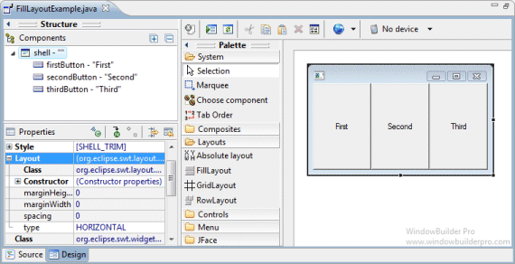
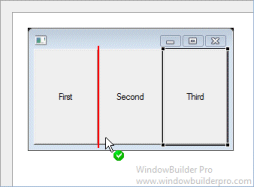
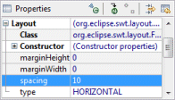
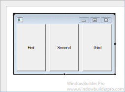
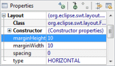
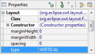
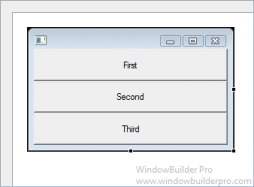
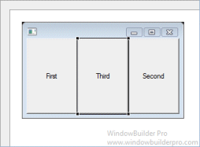

Main Features
- Select FillLayout from the Layouts palette and drop it on a Window or Composite

- Graphical feedback is provided for all drop and move interactions

- Spacing can be specified using the Property Pane
 
- Margins can be specified using the Property Pane


- Orientation can be specified using the Property Pane
 
Graphical Feedback
- When moving a widget or adding a new widget, the current drop
point is highlighted in red

